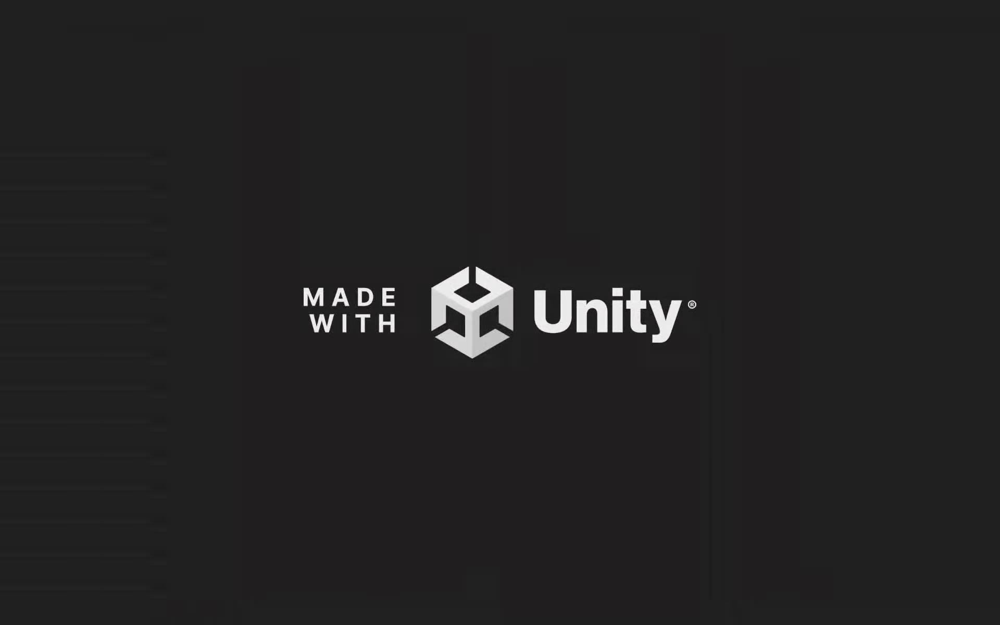

Experience
A character-systems project focused on selectable abilities and action-game controls.

Description
The character is the center of the interaction, with movement and available actions forming the basic play loop. Ability selection gives those actions an interface and a state that can be inspected.
This is a systems project. Its title is not evidence of a finished online MOBA, a public matchmaking service, or a complete roster of characters.
Detailed features
Character control
Movement and viewpoint work together to make the space readable. The player uses the controls to choose a route, judge distance, and position the character for the next interaction.
Action systems
This part of the project contributes to the core interaction described above. Its role is presented through the project’s available interface, source, and visual preview.
Encounter presentation
An encounter groups threats and objectives into a readable sequence. Progress is communicated through the state of the participating characters and the result of their actions.
Build summary
The Unity source separates the project into runtime C# components. The saved code includes character controller, animation control, navigation agents, raycast interaction, ui components. The script examples below identify concrete parts of this project’s implementation.
- Technology
- Unity
- Scope
- Unity project
- Presentation
- Footage unavailable
Implementation examples
CameraManager.csPlayerMovement.csMovement.csAbilities.csMouseLook.csPT_Create_Prefab.cs
Feature video
Feature video unavailable
A verified recording of this project has not been published.